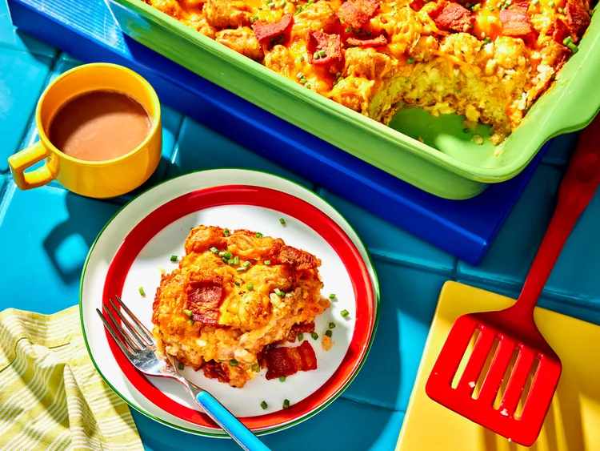

Casseroles

Description
"A yummy Tater Tot breakfast casserole that's quick to throw together and great for guests or for Christmas morning."
Ingredients
- 1lb of Diced Bacon
- Package of Frozen Bite-size Tater Tots
- Dozen Eggs
- 1/2 Cup of Milk
- Salt and Pepper
- Shredded Cheese
Steps
- Cook the bacon and drain on paper towels.
- Spread the bacon in the bottom of a baking dish, then top with tater tots.
- Beat the eggs, milk, salt, and pepper together, then pour it over the tots.
- Top with cheese and bake until the casserole is hot in the center.